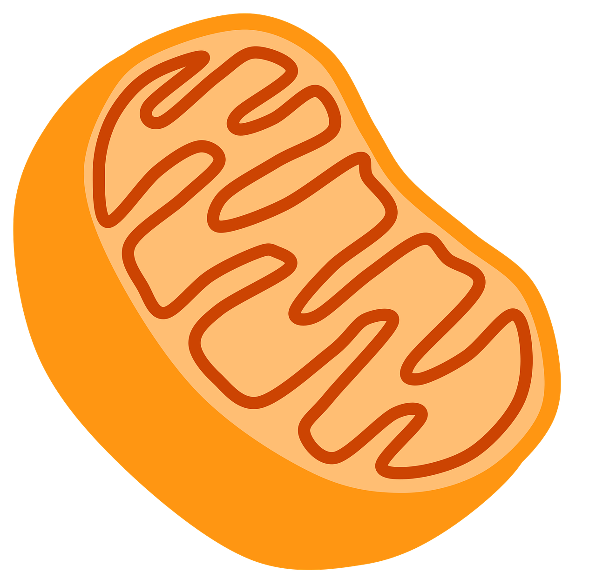
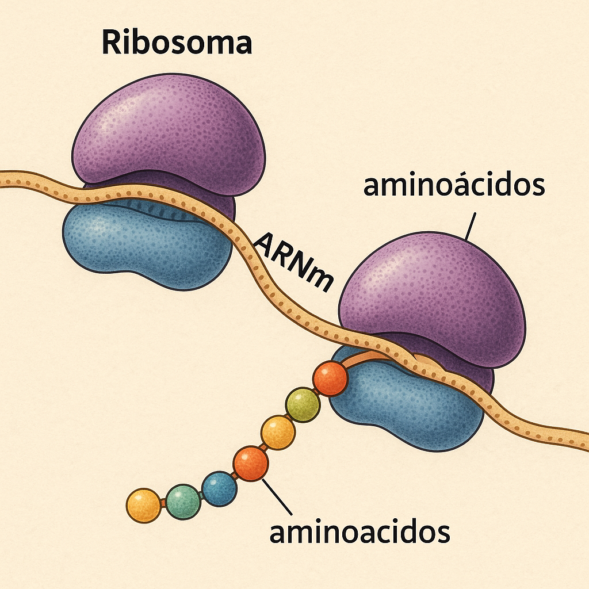
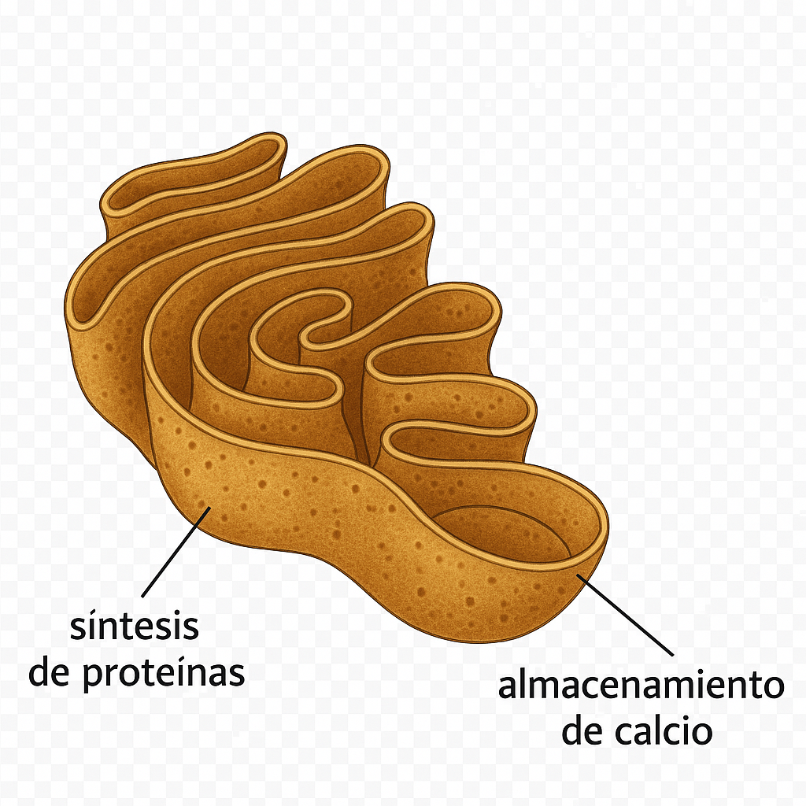
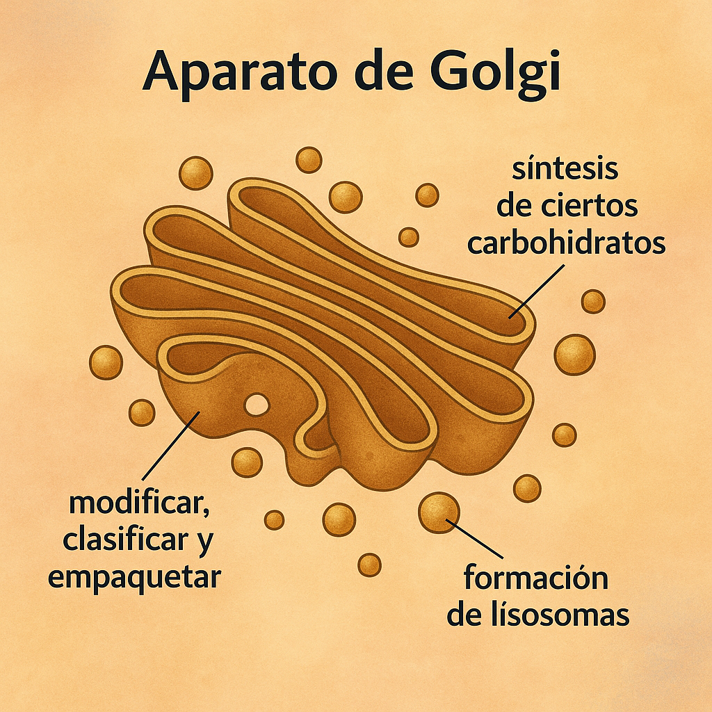

Principales organelos.
| Organelos | Funciones | Representación |
| Mitocondria | Su principal función es producir energía en forma de ATP (adenosín trifosfato) a través de un proceso llamado respiración celular. Además de la producción de energía, también juegan roles en la regulación del metabolismo celular, la señalización y la apoptosis (muerte celular programada). |  |
| Ribosomas |
La función del ribosoma es sintetizar proteínas mediante la traducción del ARN mensajero (ARNm). Los ribosomas leen la secuencia de nucleótidos del ARNm y ensamblan aminoácidos en el orden adecuado para formar proteínas, lo cual es esencial para todos los procesos celulares. |
 |
Retículo endoplásmico |
El retículo endoplásmico (RE) es un orgánulo celular que se encarga de diversas funciones, siendo principalmente responsable de la síntesis de proteínas y lípidos, el almacenamiento de calcio y la detoxificación de sustancias. |  |
| Aparato de Golgi | Se encarga de modificar, clasificar y empaquetar proteínas y lípidos para su distribución y secreción dentro y fuera de la célula. Además, participa en la síntesis de ciertos carbohidratos y en la formación de lisosomas. |  |